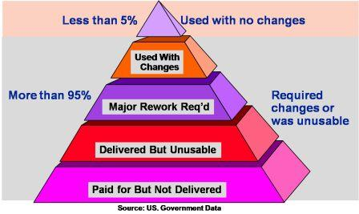
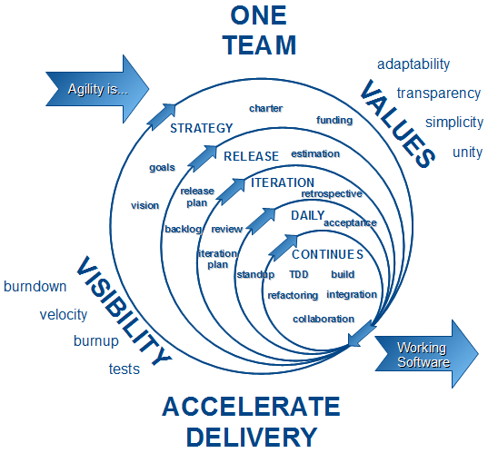
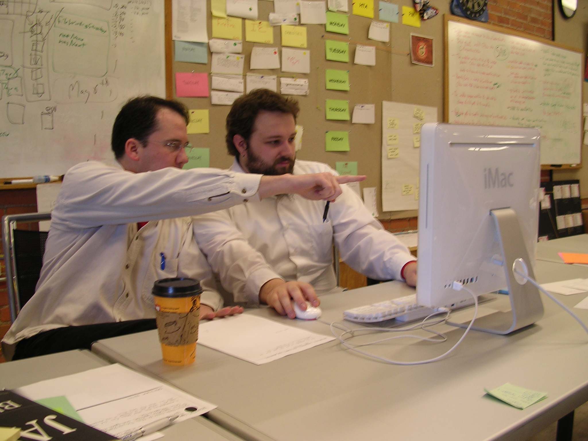

Agile 101
Nick Rothwell
The Software Crisis
Failed and Overbudget Projects
http://en.wikipedia.org/wiki/List_of_failed_and_overbudget_custom_software_projectsWaterfall Model
(1956)

- (Influenced by manufacturing and construction)
But...
- Requirements change
- Implementation is unknown
Agile Development
- Iterative, incremental and evolutionary
- Efficient and face-to-face communication
- Very short feedback loop and adaptation cycle
- Adaptive vs. predictive
Agile Practices
- Pair Programming
- Test-Driven Development
- Continuous Integration
- Scrum Meetings
- Sprint Cycles
- Planning Poker
- Refactoring
- User Stories
- ...
Pair Programming
1 × Driver, 1 × Navigator
Test-Driven Development

Develop code by writing tests
Types of Test
- Unit Tests
- Integration Tests
- Visual Tests
- GUI Tests
- System (End-to-End) Tests
- Acceptance Tests
- Installation Tests
- ...
- Regression Testing
Build a Test Suite
- (Growing) collection of test cases
- View the tests as specification
- Writing the tests: debugging investment up front
Write the Tests First!
Write the Tests First!
Python: Documentation Strings
def adder(x, y):
"""
Add x and y.
"""
return x + y>>> adder.__doc__
'\n Add x and y.\n '
>>> print len.__doc__
len(object) -> integer
Return the number of items of a sequence or mapping.
>>> help(len)DocTest
Testing with Documentation Strings
def adder(x, y):
"""
Add x and y.
>>> adder(2, 2)
4
"""
return x + ySections starting with >>> are tested
>>> import doctest
>>> doctest.testmod()
TestResults(failed=0, attempted=1)
>>> help(doctest)Invoking Tests
Run DocTest from the file:
if __name__ == "__main__":
import doctest
doctest.testmod()Run DocTest from the command prompt:
python -m doctest myFile.py(Can also do python -m doctest -v ... for verbose output
Exercise 1: FixMe
- fixme-1.py: some broken functions which need fixing
- fixme-tricky.py: a single, harder example
Run the tests with:
python fixme-1.pyAll of the tests initially fail.
(Code: here.)
Test Coverage
It is possible for all tests to pass even if the code is buggy.
- Not all functions in the code have been tested
- Not all paths through the code have been tested
- Edge cases have not been tested
Incomplete Coverage
Incomplete path coverage
def biggest(a, b):
"""
>>> biggest(4, 12)
4
"""
if a > b:
return a
else:
return aEdge cases
def average(list):
"""
>>> average([1, 2, 3])
2
"""
total = 0
for i in list: total = total + i
return total / len(list)Exercise 2: Coverage
- coverage.py: buggy code, but all the tests pass
- Fix the tests and the code (in that order!)
- Pair-program!
- Person A implements new test(s)
- Person B fixes code to pass test(s)
- Swap over
Test-Driven Development
- Develop code in small steps
- At each step, write a test which fails
- Swap driver/navigator
- Write code to make the test pass
Exercise 3: TDD
Full-on Test Driven Development
In each case, implement a test for each development stage
- make_bricks.py
- make_chocolate.py
(Thanks to http://codingbat.com.)